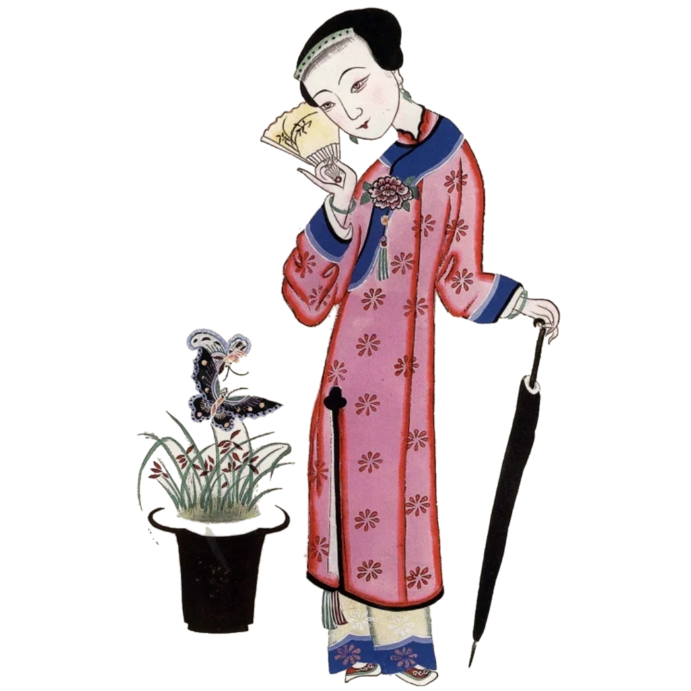

非遗木版年画
四川夹江年画

新闻
首批国家级非物质文化遗产——绵竹木版年画
灵感中国Inspiration丨绵竹木版年画：在木屑飞舞中，看指尖的彩色世界
国庆不用人挤人！在绵竹，也能“浪”得很文艺！
灵感中国Inspiration丨绵竹木版年画：在木屑飞舞中
非遗故事 | 绵竹木版年画：一绘一版，传承经典
绵竹木版年画 - 中国非物质文化遗产网
绵竹年画：千年古邑的艺术奇葩
绵竹年画的非遗传承与发展现状
金字招牌｜非遗迎春：年之有味 画之祈年——绵竹年画
传承者 | 绵竹年画画师陈云福：门上重绘乡土中国的众神图
绵竹木版年画
绵竹木版年画，四川省德阳市民间传统美术，国家级非物质文化遗产之一、与剑南春酒、赵坡茶并称绵竹三绝。
绵竹年画以木版刻印、手工彩绘为特色，又称绵竹木版年画。始于宋代盛于明清，内容以吉祥喜庆、民间传说、乡土生活等为主，构图丰富夸张、色彩鲜艳明快，具有鲜明的农耕文化特色。
了解更多